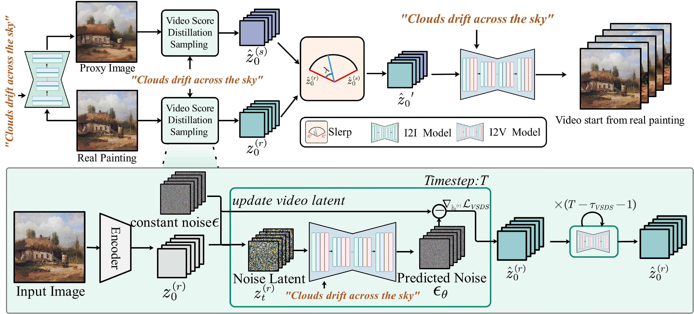
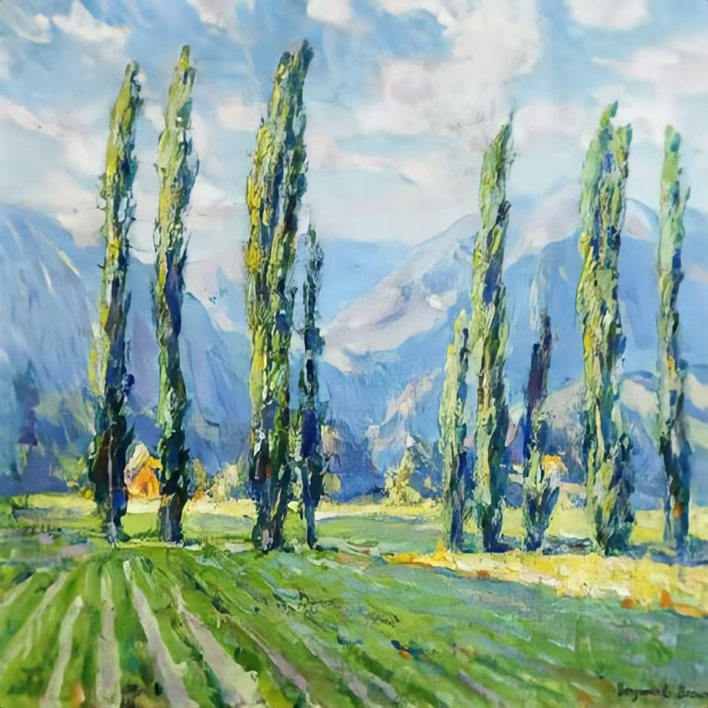

Every Painting Awakened: A Training-free Framework for Painting-to-Animation Generation
Lingyu
Liu 1
Yaxiong
Wang 2
Li
Zhu 1
Zhedong
Zheng 3
| 1Xi'an Jiaotong University |
2Hefei University of Technology |
3University of Macau |

People are walking around.

The waterfall cascades downward.

White clouds drift across the sky.

The waves lap against the shore.

A woman in a white dress picking apples in a lush garden.

Man with a stick walking along a path by a river.

The blue wisteria flowers sway in the wind.

The sheep are running between the blooming trees.

The flowers in the flower field sway like waves in the sea.

Farmers harvesting grapes in a vineyard.

Farmers with scythes walking through a wheat field.

The waves gently lap at the little boy's feet.
Abstract
We present a training-free framework specifically designed to bring real-world static paintings to life through
image-to-video (I2V) synthesis, addressing the persistent challenge of aligning these motions with textual
guidance while preserving fidelity to the original artworks.
Existing I2V methods, primarily trained on natural video datasets, often struggle to generate dynamic outputs from
static paintings.
It remains challenging to generate motion while maintaining visual consistency with real-world paintings. This
results in two distinct failure modes: either static outputs due to limited text-based motion interpretation or
distorted dynamics caused by inadequate alignment with real-world artistic styles.
We leverage the advanced text-image alignment capabilities of pre-trained image models to guide the animation
process. Our approach introduces synthetic proxy images through two key innovations:
(1) Dual-path score distillation: We employ a dual-path architecture to distill motion priors from both
real and synthetic data, preserving static details from the original painting while learning dynamic
characteristics from synthetic frames.
(2) Hybrid latent fusion: We integrate hybrid features extracted from real paintings and synthetic proxy
images via spherical linear interpolation in the latent space, ensuring smooth transitions and enhancing temporal
consistency.
Experimental evaluations confirm that our approach significantly improves semantic alignment with text prompts
while faithfully preserving the unique characteristics and integrity of the original paintings. Crucially, by
achieving enhanced dynamic effects without requiring any model training or learnable parameters, our framework
enables plug-and-play integration with existing I2V methods, making it an ideal solution for animating real-world
paintings.
Approach

We first use a pre-trained image refinement model to generate a refined synthetic image
from the real painting and the text prompt for future guidance.
We apply dual-path video score distillation sampling to the real painting and the synthetic proxy image, obtaining
two updated initial video latent vectors. These
vectors are then spherically interpolated along the temporal dimension to generate a fused latent vector. This
fused vector is subsequently used as input to the I2V model for video
generation.
Specifically, for a real painting, its latent vector extracted by an image encoder is replicated to form a static
video. During the video score distillation sampling phase, gaussian noise is added to this static video at each
time step, and the gradient of the video score
distillation sampling loss updates the latent vector, resulting in the optimized dynamic video latent.
Impact of Diverse Synthesis Strategies
Text Prompt: The tall poplar trees sway gently in the breeze.
Diverse Synthesis Strategies

Text-driven Reconstruction
Image-driven Reconstruction
Failure cases
Text Prompt: The petals of the flowers in the vase gently fall.
The baseline I2V model fails to infer complex scene dynamics (e.g., "falling petals"), producing static outputs.
With synthetic image, the model captures the semantic intent ("petals falling onto the table") but struggles to
generate a continuous motion sequence, only partially depicting the process in the final frames due to inherent
limitations in temporal coherence.